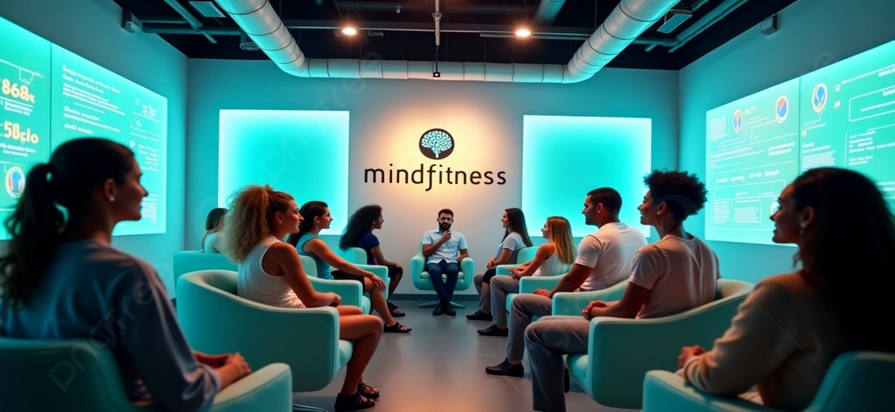
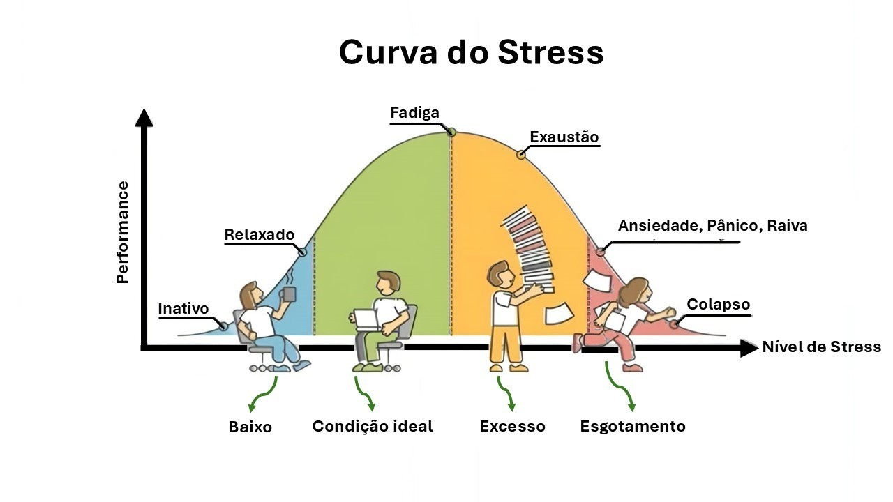
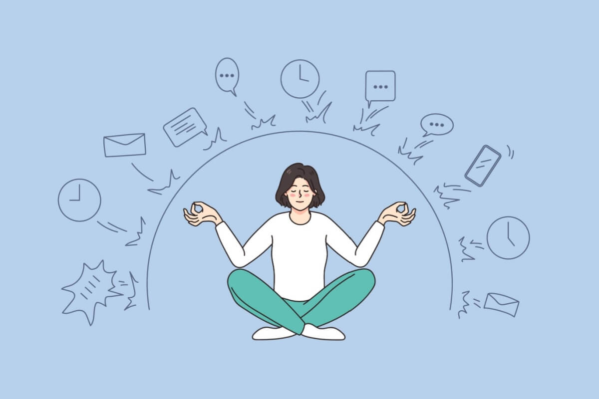

Dados, Bem-Estar e Produtividade: O que a Ciência Revela
Quando corpo, mente e energia vibram em sintonia, a produtividade é consequência. Neste artigo, vamos olhar o bem-estar com lentes científicas e espirituais: com gráficos reais, fontes confiáveis e uma interpretação com alma.
O que os dados dizem sobre bem-estar e performance?
Estudos da Harvard Business Review, APA e OMS mostram relações diretas entre práticas de autocuidado e aumento de performance:
- Meditação diária: reduz o estresse em até 60% e melhora o foco.
- Atividade física regular: aumenta em 23% os níveis de produtividade.
- Qualidade do sono: trabalhadores com bom sono têm até 30% menos erros cognitivos.
Fontes confiáveis para aprofundar
- Organização Mundial da Saúde (OMS)
- American Psychological Association
- Harvard Business Review
- Our World in Data
O impacto do stress na produtividade
Nem todo estresse é vilão. Existe um ponto onde ele se torna motor da ação — mas quando ultrapassamos o limite, o que era performance vira colapso. A imagem abaixo ilustra essa dança tênue entre produtividade e esgotamento.
Esse gráfico serve como um espelho emocional: nos mostra que o equilíbrio não é ausência de pressão, mas a harmonia entre movimento e pausa.
Mais que números, frequências
Esses gráficos são espelhos. Eles mostram que quando o corpo está bem, a mente clareia. Quando a mente clareia, o espírito tem espaço para respirar. O equilíbrio interno impacta diretamente o externo.
Dicas para começar hoje
- Pratique 5 minutos de respiração consciente ao acordar;
- Caminhe com presença e sem celular por 20 minutos ao dia;
- Durma com uma intencionalidade clara: "recarregar corpo e alma";
- Desconecte do ruído e reconecte-se com o som do seu ser.
Conclusão
O que nós chamamos de produtividade não é apenas esforço. É sintonia. É campo vibracional otimizado. A tecnologia pode medir, mas só a consciência pode transformar. Essa jornada começa de dentro pra fora. E ela já começou.
